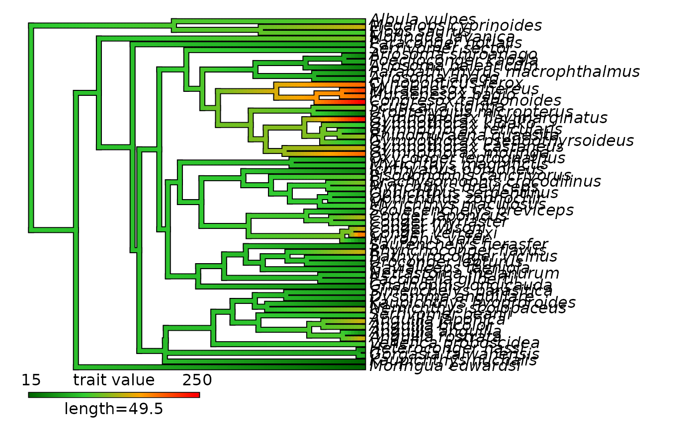
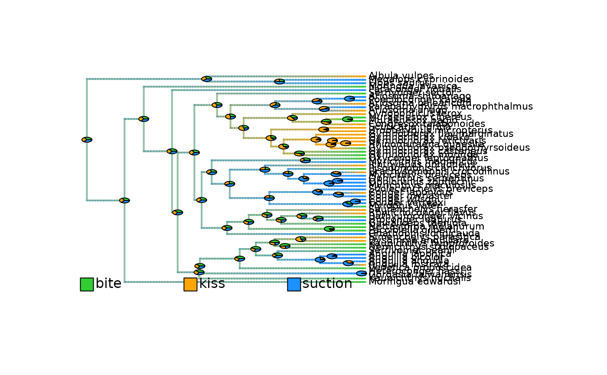
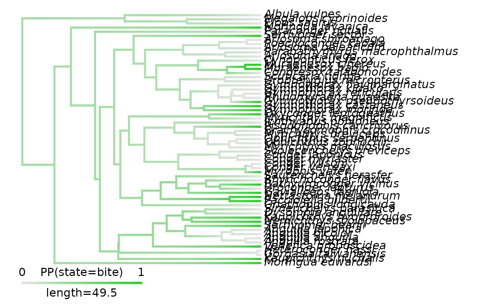

Map trait evolution on a time-calibrated phylogeny
Source:R/prepare_trait_data.R
prepare_trait_data.RdMap trait evolution on a time-calibrated phylogeny in several steps:
Step 1: Fit evolutionary models to trait data using Maximum Likelihood.
Step 2: Select the best fitting model comparing AICc.
Step 3: Infer ancestral character estimates (ACE) at nodes.
Step 4: Run stochastic mapping simulations to generate evolutionary histories compatible with the best model and inferred ACE. (Only for categorical and biogeographic data)
Step 5: Infer ancestral states along branches.
For continuous traits: use interpolation to produce a
contMap.For categorical and biogeographic data: compute posterior frequencies of each state/range to produce a
densityMapfor each state/range.
Usage
prepare_trait_data(
tip_data,
trait_data_type,
phylo,
seed = NULL,
evolutionary_models = NULL,
Q_matrix = NULL,
BioGeoBEARS_directory_path = NULL,
keep_BioGeoBEARS_files = TRUE,
prefix_for_files = NULL,
nb_cores = 1,
max_range_size = 2,
split_multi_area_ranges = FALSE,
...,
res = 100,
run_stochastic_maps = FALSE,
nb_simulations = 100,
color_scale = NULL,
colors_per_levels = NULL,
plot_map = TRUE,
plot_overlay = TRUE,
add_ACE_pies = TRUE,
PDF_file_path = NULL,
return_ace = TRUE,
return_BSM = FALSE,
return_simmaps = FALSE,
return_best_model_fit = FALSE,
return_model_selection_df = FALSE,
verbose = TRUE
)Arguments
- tip_data
Named numeric or character vector of trait values/states/ranges at tips. Names should be ordered as the tip labels in the phylogeny found in
phylo$tip.label. For biogeographic data, ranges should follow the coding scheme of BioGeoBEARS with a unique CAPITAL letter per unique area (ex: A, B), combined to form multi-area ranges (Ex: AB). Alternatively, you can provide tip_data as a matrix or data.frame of binary presence/absence in each area (coded as unique CAPITAL letter). In this case, columns are unique areas, rows are taxa, and values are integer (0/1) signaling absence or presence of the taxa in the area.- trait_data_type
Character string. Type of trait data. Either: "continuous", "categorical" or "biogeographic".
- phylo
Time-calibrated phylogeny. Object of class
"phylo"as defined in{ape}. Tip labels (phylo$tip.label) should match names intip_data.- seed
Integer. Set the seed to ensure reproducibility. Default is
NULL(a random seed is used).- evolutionary_models
(Vector of) character string(s). To provide the set of evolutionary models to fit on the data.
Models available for continuous data are detailed in
geiger::fitContinuous(). Default is"BM".Models available for categorical data are detailed in
geiger::fitDiscrete(). Default is"ARD".Models for biogeographic data are fit with R package
BioGeoBEARSusingBioGeoBEARS::bears_optim_run(). Default is"DEC".See list in "Details" section.
- Q_matrix
Custom Q-matrix for categorical data representing transition classes between states. Transitions with similar integers are estimated with a shared rate parameter. Transitions with
0represent rates that are fixed to zero (i.e., impossible transitions). Diagonal must be populated withNA.row.names(Q_matrix)andcol.names(Q_matrix)are the states. Provide"matrix"among the models listed in 'evolutionary_models' to use the custom Q-matrix for modeling. Only for categorical data.- BioGeoBEARS_directory_path
Character string. The path to the directory used to store input/output files generated for/by BioGeoBEARS during biogeographic historical inferences. Only for biogeographic data.
- keep_BioGeoBEARS_files
Logical. Whether the
BioGeoBEARS_directoryand its content should be kept after the run. Default =TRUE. Only for biogeographic data.- prefix_for_files
Character string. Prefix to add to all BioGeoBEARS files stored in the
BioGeoBEARS_directory_pathifkeep_BioGeoBEARS_files = TRUE. Files will be exported such as 'prefix_*' with an underscore separating the prefix and the file name. Default isNULL(no prefix is added). Only for biogeographic data.- nb_cores
Integer. Number of cores to use for parallel computation during BioGeoBEARS runs. Default =
1. Only for biogeographic data.- max_range_size
Integer. Maximum number of unique areas encompassed by multi-area ranges. Default =
2. Only for biogeographic data.- split_multi_area_ranges
Logical. Whether to split multi-area ranges across unique areas when mapping ranges. Ex: For range EW, posterior probabilities will be split equally between Eastern Palearctic (E) and Western Palearctic (W). Default =
FALSE. Only for biogeographic data.- ...
Additional arguments to be passed down to the functions used to fit models (See
evolutionary_models) and produce simmaps withphytools::make.simmap()orBioGeoBEARS::runBSM().- res
Integer. Define the number of time steps used to interpolate/estimate trait value/state/range in
contMap/densityMaps. Default =100.- run_stochastic_maps
Logical. Whether to perform continuous stochastic mapping to account for uncertainty in ancestral trait estimates. Only for continuous data (This is always 'TRUE' for categorical and biogeographic data). This functionality is currently not available for total-evidence phylogenies (i.e., including fossils as tips).
- nb_simulations
Integer. Define the number of simulations generated for stochastic mapping. Default =
100.- color_scale
Character vector. List of colors to use to build the color scale with
grDevices::colorRampPalette()showing the evolution of a continuous trait on thecontMap. From lowest values to highest values. Only for continuous data. Default =NULLwill use the rainbow() color palette.- colors_per_levels
Named character string. To set the colors to use to map each state/range posterior probabilities. Names = states/ranges; values = colors. If
NULL(default), therainbow()color scale will be used for categorical trait; theBioGeoBEARS::get_colors_for_states_list_0based()will be used for biogeographic ranges. If no color is provided for multi-area ranges, they will be interpolated based on the colors provided for unique areas. Only for categorical and biogeographic data.- plot_map
Logical. Whether to plot or not the phylogeny with mapped trait evolution. Default =
TRUE.- plot_overlay
Logical. If
TRUE(default), plot a uniquedensityMapwith overlapping states/ranges using transparency. IfFALSE, plot adensityMapper state/range. Only for "categorical" and "biogeographic" data.- add_ACE_pies
Logical. Whether to add pies of posterior probabilities of states/ranges at internal nodes on the mapped phylogeny. Default =
TRUE. Only for categorical and biogeographic data.- PDF_file_path
Character string. If provided, the plot will be saved in a PDF file following the path provided here. The path must end with ".pdf".
- return_ace
Logical. Whether the named vector of ancestral character estimates (ACE) at internal nodes should be returned in the output. Default =
TRUE.- return_BSM
Logical. (Only for Biogeographic data) Whether the summary tables of anagenetic and cladogenetic events generated during the Biogeographic Stochastic Mapping (BSM) process should be returned in the output. Default =
FALSE.- return_simmaps
Logical. Whether the evolutionary histories simulated during stochastic mapping (i.e.,
simmaps) should be returned in the output. Default =TRUE. Only for "categorical" and "biogeographic" data. This is needed to be able to track which simulated histories provided which trait data in downstream analyses, although it may create voluminous objects.- return_best_model_fit
Logical. Whether to include the output of the best fitting model in the function output. Default =
FALSE.- return_model_selection_df
Logical. Whether to include the data.frame summarizing model comparisons used to select the best fitting model should be returned in the output. Default =
FALSE.- verbose
Logical. Should progression be displayed? A message will be printed for every step in the process. Default is
TRUE.
Value
The function returns a list with at least three elements.
$contMap(For "continuous" data) Object of class"contMap", typically generated withphytools::contMap(), that contains a phylogenetic tree and a unique continuous trait mapping representing the interpolated ML estimates of ancestral trait evolution across the phylogeny.$contMaps(For "continuous" data, withrun_stochastic_maps = TRUE) List of objects of class"contMap", each map representing a simulated ancestral trait evolution conditioned on the observed trait data and model fit.$densityMaps(For "categorical" and "biogeographic" data) List of objects of class"densityMap", typically generated withphytools::densityMap(), that contains a phylogenetic tree and associated mapping of probability to harbor a given state/range along branches. The list contains one"densityMap"per state/range found in thetip_data.$densityMaps_all_ranges(For "biogeographic" data only, ifsplit_multi_area_ranges = TRUE) Same as$densityMaps, but for all ranges including the multi-area ranges (e.g., AB) while$densityMapswill display posterior probabilities for unique areas only (e.g., A and B), with multi-area ranges split across the unique areas they encompass.$trait_data_typeCharacter string. Record the type of trait data. Either: "continuous", "categorical" or "biogeographic".$nb_simulationsInteger. The number of simulations / stochastic maps produced.
If return_ace = TRUE,
$aceFor continuous traits: Named vector that records the ancestral character estimates (ACE) at internal nodes. For categorical and biogeographic data: Matrix that records the posterior probabilities of ancestral states/ranges (characters) estimates (ACE) at internal nodes. Rows are internal nodes. Columns are states/ranges. Values are posterior probabilities of each state per node.$ace_all_rangesFor biogeographic data, ifsplit_multi_area_ranges = TRUE: Named vector that records the ancestral character estimates (ACE) at internal nodes, but including all ranges observed in the simmaps, including the multi-area ranges (e.g., AB), while$acewill display posterior probabilities for unique areas only (e.g., A and B), with multi-area ranges split across the unique areas they encompass.
If return_BSM = TRUE, (Only for biogeographic data)
$BSM_outputList of two lists that contains summary information of cladogenetic ($RES_caldo_events_tables) and anagenetic ($RES_ana_events_tables) events recording across the N simulations of biogeographic histories performed during Biogeographic Stochastic Mapping (BSM). Each element of the list is a data.frame recording events occurring during one simulation.
If return_simmaps = TRUE, (Only for categorical and biogeographic data)
$simmapsList that contains as many objects of class"simmap"thatnb_simulationswere requested. Each simmap object is a phylogeny with one simulated discrete character/geographic evolutionary history (i.e., transitions in character states/geographic ranges) mapped along branches. This is needed to be able to track which simulated history provided which trait data in downstream analyses, although it may create voluminous objects.
If return_best_model_fit = TRUE,
$best_model_fitList that provides the output of the best fitting model.
If model_selection_df = TRUE,
$model_selection_dfData.frame that summarizes model comparisons used to select the best fitting model.
For biogeographic data, the function also produces input and output files associated with BioGeoBEARS and stored in the directory
specified in BioGeoBEARS_directory_path. The directory and its content are kept if keep_BioGeoBEARS_files = TRUE
Details
Map trait evolution on a time-calibrated phylogeny in several steps:
Step 1: Models are fit using a Maximum Likelihood approach:
For "continuous" data models are fit with
geiger::fitContinuous(): "BM", "OU", "EB", "rate_trend", "lambda", "kappa", "delta". Default is"BM".For "categorical" data models are fit with
geiger::fitDiscrete(): "ER", "SYM", "ARD", "meristic", "matrix". Default is"ARD".For "biogeographic" data models are fit with R package
BioGeoBEARS: "BAYAREALIKE", "DIVALIKE", "DEC", "BAYAREALIKE+J", "DIVALIKE+J", "DEC+J". Default is"DEC".
Step 2: Best model is identified among the list of evolutionary_models by comparing the corrected AIC (AICc)
and selecting the model with lowest AICc.
Step 3: For continuous traits: Ancestral character estimates (ACE) are inferred with phytools::fastAnc on a tree
with modified branch lengths scaled to reflect the evolutionary rates estimated from the best model using phytools::rescale().
Step 4: Stochastic Mapping.
For categorical and biogeographic data, stochastic mapping simulations are performed by default to generate evolutionary histories compatible with the best model and inferred ACE. Node states/ranges are drawn from the scaled marginal likelihoods of ACE, and state/range shifts along branches are simulated according to the transition matrix Q estimated from the best fitting model.
For continuous trait data, stochastic mapping simulations are performed only if run_stochastic_maps = TRUE.
Evolutionary histories of continuous trait evolution, conditioned on the observed trait data and model fit,
including estimates of ancestral trait values and variance at nodes, are produced with contsimmap::make.contsimmap().
Step 5: Infer ancestral states along branches.
For continuous traits:
Ancestral values along branches are interpolated using
phytools::contMap(). This provides quick estimates of trait value at any point in time, but does not account for uncertainty in trait estimates. Moreover, it does not provide fully accurate ML estimates in case of models that are time or trait-value dependent (such as "EB" or "OU") as the interpolation used to build the contMap is assuming a constant rate along each branch. However, ancestral trait values at nodes remain accurate. It produces a single$contMaprepresenting the ML estimates of ancestral trait evolution across the phylogeny.If
run_stochastic_maps = TRUE, ancestral values along branches are recorded across all simulated evolutionary histories (i.e., continuous stochastic maps), thus accounting for uncertainty in trait estimates. This is needed to apply the "paired" or "full" strategies to account for trait estimate uncertainty in deepSTRAPP tests (See the uncertainty_strategy argument in run_deepSTRAPP_* functions). It produces a list of$contMaps, each map representing a simulated ancestral trait evolution across the phylogeny. This functionality is currently not available for total-evidence phylogenies (i.e., including fossils as tips)
For categorical and biogeographic data: posterior frequencies of each state/range among the simulated evolutionary histories (
simmaps) are computed to produce a list of$densityMaps, one for each state/range, reflecting the changes along branches in probability of harboring a given state/range.
Note on macroevolutionary models of trait evolution
This function provides an easy solution to map trait evolution on a time-calibrated phylogeny
and obtain the contMaps/densityMaps objects needed to run the deepSTRAPP workflow (run_deepSTRAPP_for_focal_time, run_deepSTRAPP_over_time).
However, it does not explore the most complex options for trait evolution. You may need to explore more complex models to capture the dynamics of trait evolution.
such as trait-dependent multi-rate models (phytools::brownie.lite(), OUwie::OUwie()), Bayesian MCMC implementations allowing a thorough exploration
of location and number of regime shifts (Ex: BayesTraits, RevBayes), or RRphylo for a penalized phylogenetic ridge regression approach that allows regime shifts across all branches.
Note on macroevolutionary models of biogeographic history
This function provides an easy solution to infer ancestral geographic ranges using the BioGeoBEARS framework. It allows you to directly compare model fits across 6 models: DEC, DEC+J, DIVALIKE, DIVALIKE+J, BAYAREALIKE, BAYAREALIKE+J. It uses a step-wise approach by using MLE estimates of previous runs as starting parameter values when increasing complexity (adding +J parameters). However, it does not explore the most complex options for historical biogeography. You may need to explore more complex models to capture the dynamics of range evolution such as time-stratification with adjacency matrices, dispersal multipliers (+W), distance-based dispersal probabilities (+X), or other features. See for instance, http://phylo.wikidot.com/biogeobears.
The R package BioGeoBEARS is needed for this function to work with biogeographic data.
Please install it manually from: https://github.com/nmatzke/BioGeoBEARS.
References
For macroevolutionary models in geiger: Pennell, M. W., Eastman, J. M., Slater, G. J., Brown, J. W., Uyeda, J. C., FitzJohn, R. G., ... & Harmon, L. J. (2014). geiger v2. 0: an expanded suite of methods for fitting macroevolutionary models to phylogenetic trees. Bioinformatics, 30(15), 2216-2218. doi:10.1093/bioinformatics/btu181 .
For BioGeoBEARS: Matzke, Nicholas J. (2018). BioGeoBEARS: BioGeography with Bayesian (and likelihood) Evolutionary Analysis with R Scripts. version 1.1.1, published on GitHub on November 6, 2018. doi:10.5281/zenodo.1478250 . Website: http://phylo.wikidot.com/biogeobears.
For continuous stochastic mapping in contsimmap: Martin, B. S., & Weber, M. G. (2026). Stochastic character mapping of continuous traits on phylogenies. Systematic Biology, syag031. doi:10.1093/sysbio/syag031 .
See also
geiger::fitContinuous() geiger::fitDiscrete() phytools::contMap() phytools::densityMap()
For a guided tutorial, see the associated vignettes:
For continuous trait data:
vignette("model_continuous_trait_evolution", package = "deepSTRAPP")For categorical trait data:
vignette("model_categorical_trait_evolution", package = "deepSTRAPP")For biogeographic range data:
vignette("model_biogeographic_range_evolution", package = "deepSTRAPP")
Examples
# ----- Example 1: Continuous data ----- #
## Load phylogeny and tip data
# Load eel phylogeny and tip data from the R package phytools
# Source: Collar et al., 2014; DOI: 10.1038/ncomms6505
data("eel.tree", package = "phytools")
data("eel.data", package = "phytools")
# Extract body size
eel_data <- stats::setNames(eel.data$Max_TL_cm,
rownames(eel.data))
# (May take several minutes to run)
## Map trait evolution on the phylogeny
mapped_cont_traits <- prepare_trait_data(
tip_data = eel_data,
trait_data_type = "continuous",
phylo = eel.tree,
evolutionary_models = c("BM", "OU", "lambda", "kappa"),
# Example of an additional argument ('control') that can be provided to geiger::fitContinuous()
control = list(niter = 200),
color_scale = c("darkgreen", "limegreen", "orange", "red"),
plot_map = FALSE,
return_best_model_fit = TRUE,
return_model_selection_df = TRUE,
verbose = TRUE)
#> Warning: Entries in 'tip_data' were reordered to match 'phylo$tip.label.
#>
#> 2026-09-09 04:39:26.662469 - Fit 4 evolutionary model(s): BM, OU, lambda, kappa.
#>
#> GEIGER-fitted comparative model of continuous data
#> fitted ‘BM’ model parameters:
#> sigsq = 113.836440
#> z0 = 85.702289
#>
#> model summary:
#> log-likelihood = -338.935210
#> AIC = 681.870419
#> AICc = 682.077316
#> free parameters = 2
#>
#> Convergence diagnostics:
#> optimization iterations = 200
#> failed iterations = 0
#> number of iterations with same best fit = 200
#> frequency of best fit = 1.000
#>
#> object summary:
#> 'lik' -- likelihood function
#> 'bnd' -- bounds for likelihood search
#> 'res' -- optimization iteration summary
#> 'opt' -- maximum likelihood parameter estimates
#>
#> GEIGER-fitted comparative model of continuous data
#> fitted ‘OU’ model parameters:
#> alpha = 0.043393
#> sigsq = 278.039659
#> z0 = 92.068484
#>
#> model summary:
#> log-likelihood = -329.253814
#> AIC = 664.507628
#> AICc = 664.928681
#> free parameters = 3
#>
#> Convergence diagnostics:
#> optimization iterations = 200
#> failed iterations = 0
#> number of iterations with same best fit = 8
#> frequency of best fit = 0.040
#>
#> object summary:
#> 'lik' -- likelihood function
#> 'bnd' -- bounds for likelihood search
#> 'res' -- optimization iteration summary
#> 'opt' -- maximum likelihood parameter estimates
#>
#> GEIGER-fitted comparative model of continuous data
#> fitted ‘lambda’ model parameters:
#> lambda = 0.636234
#> sigsq = 41.410601
#> z0 = 88.966630
#>
#> model summary:
#> log-likelihood = -328.943987
#> AIC = 663.887974
#> AICc = 664.309027
#> free parameters = 3
#>
#> Convergence diagnostics:
#> optimization iterations = 200
#> failed iterations = 0
#> number of iterations with same best fit = 63
#> frequency of best fit = 0.315
#>
#> object summary:
#> 'lik' -- likelihood function
#> 'bnd' -- bounds for likelihood search
#> 'res' -- optimization iteration summary
#> 'opt' -- maximum likelihood parameter estimates
#>
#> GEIGER-fitted comparative model of continuous data
#> fitted ‘kappa’ model parameters:
#> kappa = 0.020832
#> sigsq = 1067.982684
#> z0 = 79.660033
#>
#> model summary:
#> log-likelihood = -329.098433
#> AIC = 664.196866
#> AICc = 664.617918
#> free parameters = 3
#>
#> Convergence diagnostics:
#> optimization iterations = 200
#> failed iterations = 0
#> number of iterations with same best fit = 21
#> frequency of best fit = 0.105
#>
#> object summary:
#> 'lik' -- likelihood function
#> 'bnd' -- bounds for likelihood search
#> 'res' -- optimization iteration summary
#> 'opt' -- maximum likelihood parameter estimates
#>
#> 2026-09-09 04:39:31.820086 - Compare model fits.
#>
#> model logL k AIC AICc delta_AICc Akaike_weights rank
#> BM BM -338.9352 2 681.8704 682.0773 17.7682886 0.0 4
#> OU OU -329.2538 3 664.5076 664.9287 0.6196536 28.3 3
#> lambda lambda -328.9440 3 663.8880 664.3090 0.0000000 38.6 1
#> kappa kappa -329.0984 3 664.1969 664.6179 0.3088913 33.1 2
#>
#> 2026-09-09 04:39:31.822435 - Infer Ancestral Character Estimates from the best fitting model: lambda.
#>
#> 2026-09-09 04:39:31.912173 - Create contMap of ML estimates by interpolating values along branches.
#>
## Explore output
plot_contMap(mapped_cont_traits$contMap) # contMap with interpolated trait values

mapped_cont_traits$model_selection_df # Summary of model selection
#> model logL k AIC AICc delta_AICc Akaike_weights rank
#> BM BM -338.9352 2 681.8704 682.0773 17.7682886 0.0 4
#> OU OU -329.2538 3 664.5076 664.9287 0.6196536 28.3 3
#> lambda lambda -328.9440 3 663.8880 664.3090 0.0000000 38.6 1
#> kappa kappa -329.0984 3 664.1969 664.6179 0.3088913 33.1 2
# Parameter estimates and optimization summary of the best model
# (Here, the best model is Pagel's lambda)
mapped_cont_traits$best_model_fit$opt
#> $lambda
#> [1] 0.6362341
#>
#> $sigsq
#> [1] 41.4106
#>
#> $z0
#> [1] 88.96663
#>
#> $lnL
#> [1] -328.944
#>
#> $method
#> [1] "subplex"
#>
#> $k
#> [1] 3
#>
#> $aic
#> [1] 663.888
#>
#> $aicc
#> [1] 664.309
#>
mapped_cont_traits$ace # Ancestral character estimates at internal nodes
#> Ancestral character estimates using fastAnc:
#> 62 63 64 65 66 67 68 69
#> 88.96663 84.58639 85.69352 84.77199 84.94068 80.66645 80.66636 64.96139
#> 70 71 72 73 74 75 76 77
#> 84.53248 85.21886 90.35787 102.56330 102.18389 106.13073 81.58805 81.46144
#> 78 79 80 81 82 83 84 85
#> 76.80908 88.77295 87.65074 81.95127 80.24081 75.22285 79.94233 81.35949
#> 86 87 88 89 90 91 92 93
#> 84.85107 82.82380 88.34890 91.31751 99.78225 117.29532 122.03221 99.35274
#> 94 95 96 97 98 99 100 101
#> 103.12996 89.57376 92.40436 93.29094 91.17700 90.06083 97.79820 79.43136
#> 102 103 104 105 106 107 108 109
#> 97.48625 103.59037 116.08888 119.39580 124.56468 130.76185 125.12780 117.13619
#> 110 111 112 113 114 115 116 117
#> 116.62979 113.85109 104.13030 156.76493 178.60816 184.70320 81.37733 72.18618
#> 118 119 120 121
#> 68.24551 63.30559 102.91586 111.15383
#>
# ----- Example 2: Categorical data ----- #
## Load phylogeny and tip data
# Load eel phylogeny and tip data from the R package phytools
# Source: Collar et al., 2014; DOI: 10.1038/ncomms6505
data("eel.tree", package = "phytools")
data("eel.data", package = "phytools")
# Transform feeding mode data into a 3-level factor
eel_data <- stats::setNames(eel.data$feed_mode, rownames(eel.data))
eel_data <- as.character(eel_data)
eel_data[c(1, 5, 6, 7, 10, 11, 15, 16, 17, 24, 25, 28, 30, 51, 52, 53, 55, 58, 60)] <- "kiss"
eel_data <- stats::setNames(eel_data, rownames(eel.data))
table(eel_data)
#> eel_data
#> bite kiss suction
#> 20 19 22
# Manually define a Q_matrix for rate classes of state transition to use in the 'matrix' model
# Does not allow transitions from state 1 ("bite") to state 2 ("kiss") or state 3 ("suction")
# Does not allow transitions from state 3 ("suction") to state 1 ("bite")
# Set symmetrical rates between state 2 ("kiss") and state 3 ("suction")
Q_matrix = rbind(c(NA, 0, 0), c(1, NA, 2), c(0, 2, NA))
# Set colors per state
colors_per_states <- c("limegreen", "orange", "dodgerblue")
names(colors_per_states) <- c("bite", "kiss", "suction")
# (May take several minutes to run)
## Run evolutionary models
eel_cat_3lvl_data <- prepare_trait_data(tip_data = eel_data, phylo = eel.tree,
trait_data_type = "categorical",
colors_per_levels = colors_per_states,
evolutionary_models = c("ER", "SYM", "ARD", "meristic", "matrix"),
Q_matrix = Q_matrix,
nb_simulations = 1000,
plot_map = TRUE,
plot_overlay = TRUE,
return_best_model_fit = TRUE,
return_model_selection_df = TRUE)
#> Warning: Entries in 'tip_data' were reordered to match 'phylo$tip.label.
#>
#> 2026-09-09 04:39:33.511523 - Fit 5 evolutionary model(s): ER, SYM, ARD, meristic, matrix.
#>
#> ------ ARD model ------
#>
#> GEIGER-fitted comparative model of discrete data
#> fitted Q matrix:
#> bite kiss suction
#> bite -0.030277451 3.952755e-25 3.027745e-02
#> kiss 0.037502683 -3.750268e-02 1.331551e-21
#> suction 0.001238872 3.344767e-02 -3.468654e-02
#>
#> model summary:
#> log-likelihood = -62.758696
#> AIC = 137.517393
#> AICc = 139.072949
#> free parameters = 6
#>
#> Convergence diagnostics:
#> optimization iterations = 100
#> failed iterations = 0
#> number of iterations with same best fit = 4
#> frequency of best fit = 0.040
#>
#> object summary:
#> 'lik' -- likelihood function
#> 'bnd' -- bounds for likelihood search
#> 'res' -- optimization iteration summary
#> 'opt' -- maximum likelihood parameter estimates
#>
#> ------ ER model ------
#>
#> GEIGER-fitted comparative model of discrete data
#> fitted Q matrix:
#> bite kiss suction
#> bite -0.04152112 0.02076056 0.02076056
#> kiss 0.02076056 -0.04152112 0.02076056
#> suction 0.02076056 0.02076056 -0.04152112
#>
#> model summary:
#> log-likelihood = -63.784402
#> AIC = 129.568804
#> AICc = 129.636601
#> free parameters = 1
#>
#> Convergence diagnostics:
#> optimization iterations = 100
#> failed iterations = 0
#> number of iterations with same best fit = 100
#> frequency of best fit = 1.000
#>
#> object summary:
#> 'lik' -- likelihood function
#> 'bnd' -- bounds for likelihood search
#> 'res' -- optimization iteration summary
#> 'opt' -- maximum likelihood parameter estimates
#>
#> ------ SYM model ------
#>
#> GEIGER-fitted comparative model of discrete data
#> fitted Q matrix:
#> bite kiss suction
#> bite -0.040962874 0.03174442 0.009218452
#> kiss 0.031744422 -0.05706395 0.025319531
#> suction 0.009218452 0.02531953 -0.034537983
#>
#> model summary:
#> log-likelihood = -63.442589
#> AIC = 132.885178
#> AICc = 133.306230
#> free parameters = 3
#>
#> Convergence diagnostics:
#> optimization iterations = 100
#> failed iterations = 0
#> number of iterations with same best fit = 42
#> frequency of best fit = 0.420
#>
#> object summary:
#> 'lik' -- likelihood function
#> 'bnd' -- bounds for likelihood search
#> 'res' -- optimization iteration summary
#> 'opt' -- maximum likelihood parameter estimates
#>
#> ------ Meristic model ------
#>
#> GEIGER-fitted comparative model of discrete data
#> fitted Q matrix:
#> bite kiss suction
#> bite -0.05519365 0.05519365 0.00000000
#> kiss 0.05519365 -0.09295038 0.03775672
#> suction 0.00000000 0.03775672 -0.03775672
#>
#> model summary:
#> log-likelihood = -63.667544
#> AIC = 131.335088
#> AICc = 131.541984
#> free parameters = 2
#>
#> Convergence diagnostics:
#> optimization iterations = 100
#> failed iterations = 0
#> number of iterations with same best fit = 70
#> frequency of best fit = 0.700
#>
#> object summary:
#> 'lik' -- likelihood function
#> 'bnd' -- bounds for likelihood search
#> 'res' -- optimization iteration summary
#> 'opt' -- maximum likelihood parameter estimates
#>
#> ------ User-defined matrix model ------
#>
#> GEIGER-fitted comparative model of discrete data
#> fitted Q matrix:
#> bite kiss suction
#> bite 0.00000000 0.00000000 0.00000000
#> kiss 0.02464787 -0.06273437 0.03808651
#> suction 0.00000000 0.03808651 -0.03808651
#>
#> model summary:
#> log-likelihood = -65.718012
#> AIC = 135.436023
#> AICc = 135.642920
#> free parameters = 2
#>
#> Convergence diagnostics:
#> optimization iterations = 100
#> failed iterations = 0
#> number of iterations with same best fit = 41
#> frequency of best fit = 0.410
#>
#> object summary:
#> 'lik' -- likelihood function
#> 'bnd' -- bounds for likelihood search
#> 'res' -- optimization iteration summary
#> 'opt' -- maximum likelihood parameter estimates
#>
#> 2026-09-09 04:40:15.514635 - Compare model fits.
#>
#> model logL k AIC AICc delta_AICc Akaike_weights rank
#> ER ER -63.78440 1 129.5688 129.6366 0.000000 62.3 1
#> SYM SYM -63.44259 3 132.8852 133.3062 3.669630 10.0 3
#> ARD ARD -62.75870 6 137.5174 139.0729 9.436348 0.6 5
#> meristic meristic -63.66754 2 131.3351 131.5420 1.905384 24.0 2
#> matrix matrix -65.71801 2 135.4360 135.6429 6.006319 3.1 4
#> 2026-09-09 04:40:15.516476 - Run simulations for stochastic mapping.
#>
#> make.simmap is sampling character histories conditioned on
#> the transition matrix
#>
#> Q =
#> bite kiss suction
#> bite -0.04152112 0.02076056 0.02076056
#> kiss 0.02076056 -0.04152112 0.02076056
#> suction 0.02076056 0.02076056 -0.04152112
#> (specified by the user);
#> and (mean) root node prior probabilities
#> pi =
#> bite kiss suction
#> 0.3333333 0.3333333 0.3333333
#> Done.
#> 2026-09-09 04:41:10.184908 - Extract ACE as posterior sampling from stochastic mapping.
#> 2026-09-09 04:41:12.022034 - Create densityMaps by summarizing simulations of evolutionary history (simmaps).
#>
#> 2026-09-09 04:41:32.503477 - Posterior probability computed for edge n°100/120
#> 2026-09-09 04:41:39.307439 - Posterior probabilities computed for State = bite - n°1/3
#> 2026-09-09 04:42:00.082494 - Posterior probability computed for edge n°100/120
#> 2026-09-09 04:42:07.091738 - Posterior probabilities computed for State = kiss - n°2/3
#> 2026-09-09 04:42:27.399762 - Posterior probability computed for edge n°100/120
#> 2026-09-09 04:42:34.096475 - Posterior probabilities computed for State = suction - n°3/3
#>
#> 2026-09-09 04:42:34.096702 - Plot a unique densityMap with for all states overlaid.

# Load directly output
data(eel_cat_3lvl_data, package = "deepSTRAPP")
## Explore output
plot(eel_cat_3lvl_data$densityMaps[[1]]) # densityMap for state n°1 ("bite")

eel_cat_3lvl_data$model_selection_df # Summary of model selection
#> model logL k AIC AICc delta_AICc Akaike_weights rank
#> ER ER -63.78440 1 129.5688 129.6366 0.000000 62.3 1
#> SYM SYM -63.44259 3 132.8852 133.3062 3.669630 10.0 3
#> ARD ARD -62.75870 6 137.5174 139.0729 9.436348 0.6 5
#> meristic meristic -63.66754 2 131.3351 131.5420 1.905384 24.0 2
#> matrix matrix -65.71801 2 135.4360 135.6429 6.006319 3.1 4
# Parameter estimates and optimization summary of the best model
# (Here, the best model is ER)
print(eel_cat_3lvl_data$best_model_fit)$ # Summary of the best evolutionary model
eel_cat_3lvl_data$ace # Posterior probabilities of each state (= ACE) at internal nodes
#> GEIGER-fitted comparative model of discrete data
#> fitted Q matrix:
#> bite kiss suction
#> bite -0.04152112 0.02076056 0.02076056
#> kiss 0.02076056 -0.04152112 0.02076056
#> suction 0.02076056 0.02076056 -0.04152112
#>
#> model summary:
#> log-likelihood = -63.784402
#> AIC = 129.568804
#> AICc = 129.636601
#> free parameters = 1
#>
#> Convergence diagnostics:
#> optimization iterations = 100
#> failed iterations = 0
#> number of iterations with same best fit = 100
#> frequency of best fit = 1.000
#>
#> object summary:
#> 'lik' -- likelihood function
#> 'bnd' -- bounds for likelihood search
#> 'res' -- optimization iteration summary
#> 'opt' -- maximum likelihood parameter estimates
#> NULL
# ----- Example 3: Biogeographic data ----- #
if (deepSTRAPP::is_dev_version())
{
## The R package 'BioGeoBEARS' is needed for this function to work with biogeographic data.
# Please install it manually from: https://github.com/nmatzke/BioGeoBEARS.
## Load phylogeny and tip data
# Load eel phylogeny and tip data from the R package phytools
# Source: Collar et al., 2014; DOI: 10.1038/ncomms6505
data("eel.tree", package = "phytools")
data("eel.data", package = "phytools")
# Transform feeding mode data into biogeographic data with ranges A, B, and AB.
eel_data <- stats::setNames(eel.data$feed_mode, rownames(eel.data))
eel_data <- as.character(eel_data)
eel_data[eel_data == "bite"] <- "A"
eel_data[eel_data == "suction"] <- "B"
eel_data[c(5, 6, 7, 15, 25, 32, 33, 34, 50, 52, 57, 58, 59)] <- "AB"
eel_data <- stats::setNames(eel_data, rownames(eel.data))
table(eel_data)
colors_per_ranges <- c("dodgerblue3", "gold")
names(colors_per_ranges) <- c("A", "B")
# (May take several minutes to run)
# Load ape and BioGeoBEARS to use models internally
library(ape)
library(BioGeoBEARS)
## Run evolutionary models
eel_biogeo_data <- prepare_trait_data(
tip_data = eel_data,
trait_data_type = "biogeographic",
phylo = eel.tree,
# Default = "DEC" for biogeographic
evolutionary_models = c("BAYAREALIKE", "DIVALIKE", "DEC",
"BAYAREALIKE+J", "DIVALIKE+J", "DEC+J"),
BioGeoBEARS_directory_path = tempdir(), # Ex: "./BioGeoBEARS_directory/"
keep_BioGeoBEARS_files = FALSE,
prefix_for_files = "eel",
max_range_size = 2,
split_multi_area_ranges = TRUE, # Set to TRUE to display the two outputs
# Reduce the number of Stochastic Mapping simulations to save time (Default = '1000')
nb_simulations = 100,
colors_per_levels = colors_per_ranges,
return_simmaps = TRUE,
return_best_model_fit = TRUE,
return_model_selection_df = TRUE,
verbose = TRUE)
# Load directly output
data(eel_biogeo_data, package = "deepSTRAPP")
## Explore output
str(eel_biogeo_data, 1)
eel_biogeo_data$model_selection_df # Summary of model selection
# Parameter estimates and optimization summary of the best model
# (Here, the best model is DEC+J)
eel_biogeo_data$best_model_fit$optim_result
# Posterior probabilities of each state (= ACE) at internal nodes
eel_biogeo_data$ace # Only with unique areas
eel_biogeo_data$ace_all_ranges # Including multi-area ranges (Here, AB)
## Plot densityMaps
# densityMap for range n°1 ("A")
plot(eel_biogeo_data$densityMaps[[1]])
# densityMaps with all unique areas overlaid
plot_densityMaps_overlay(eel_biogeo_data$densityMaps)
# densityMaps with all ranges (including multi-area ranges) overlaid
plot_densityMaps_overlay(eel_biogeo_data$densityMaps_all_ranges)
}